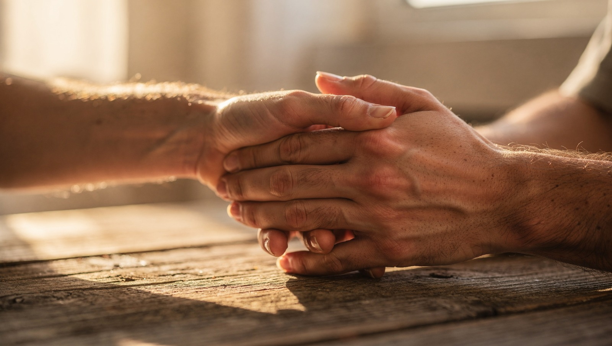

Il Contesto
Esistono vite segnate da fratture profonde: la dipendenza, la violenza subita o agita, la marginalità, il tentativo difficile di ricominciare. In questi contesti, la sofferenza raramente trova parole: si trasforma in ansia che paralizza, in isolamento che taglia i ponti, in rabbia che esplode o si rivolge verso l'interno. Sono storie che troppo spesso restano senza ascolto. Eppure è proprio lì, in quei margini, che il cambiamento autentico ha il peso specifico più alto.
Cosa Facciamo
In questi contesti, portiamo strumenti concreti per lavorare dall'interno, non sulle circostanze, ma su ciò che accade dentro. Perché spesso il cambiamento più necessario non è fuori, ma nel modo in cui una persona riesce a stare con se stessa.
- Percorsi personalizzati: ogni intervento viene modellato sul contesto specifico e sulle persone che lo abitano, per rispondere in modo autentico ai bisogni reali.
- Lavoro sugli schemi automatici: attraverso le pratiche del Metodo Magrin, le persone imparano a riconoscere ciò che le trascina — la reattività, la chiusura, il dolore — e a non esserne più in balia.
- Ritrovare se stessi: anche dopo esperienze che hanno eroso l'autostima e il senso di controllo, è possibile recuperare un rapporto più integro con se stessi, sentirsi di nuovo capaci, degni e presenti alla propria vita.
Obiettivi e Impatto
L'obiettivo non è cambiare chi si è. È ritrovare se stessi sotto il peso di ciò che si è vissuto, subito o fatto.
Chi attraversa contesti di questo tipo spesso ha perso il filo con la propria vita. Non si tratta di mancanza di volontà: sono il corpo e la mente che hanno imparato a sopravvivere, non a vivere. Il lavoro che portiamo aiuta a fare quella differenza, dall'interno. Nel tempo, le persone iniziano a riconoscere i propri meccanismi automatici senza esserne schiave. La reattività si allenta. Il bisogno compulsivo perde forza. Al suo posto emerge qualcosa che sembrava perduto: la sensazione di poter scegliere. Di valere. Di esistere oltre a ciò che è accaduto.